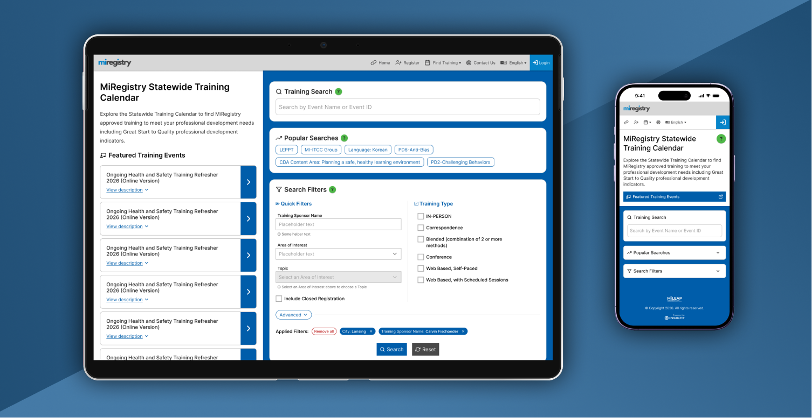
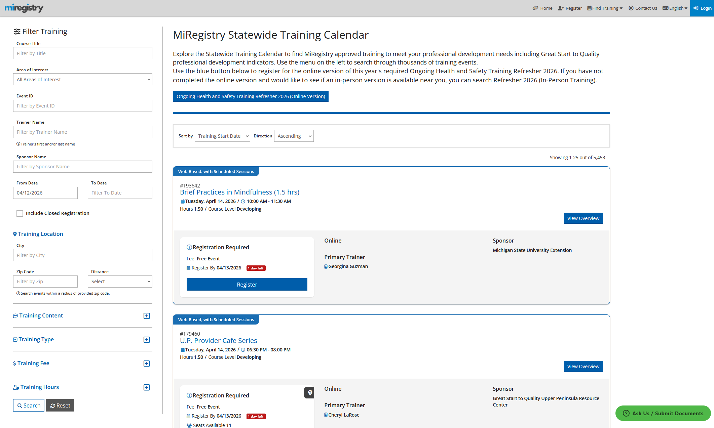
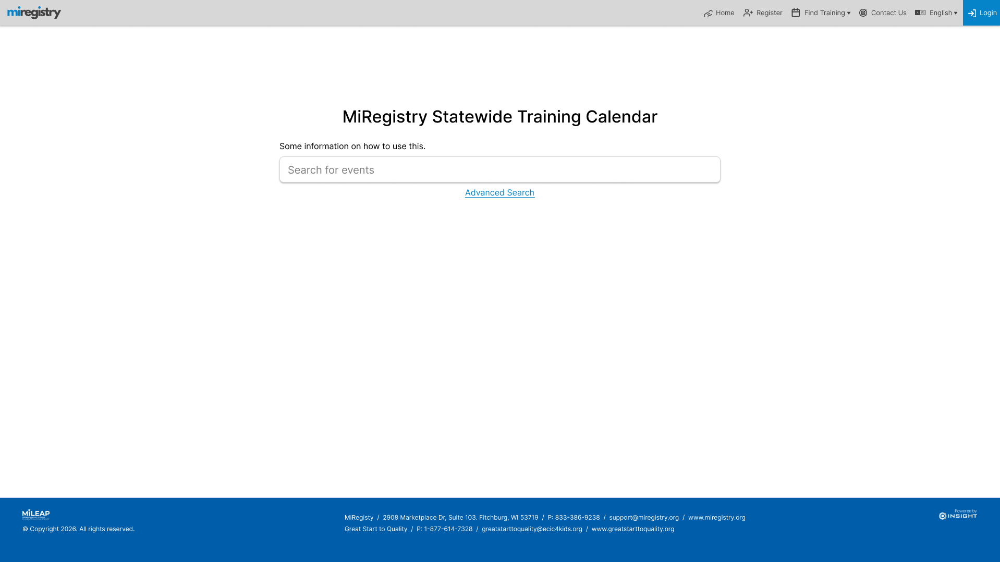
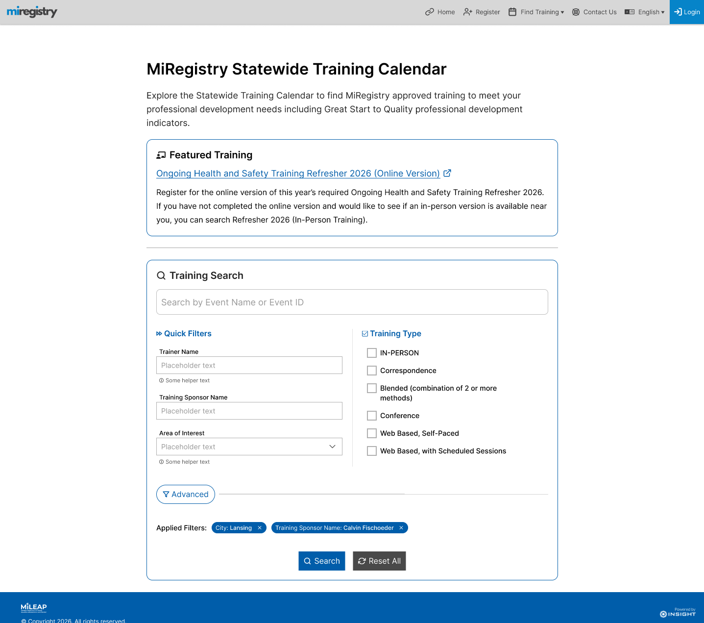
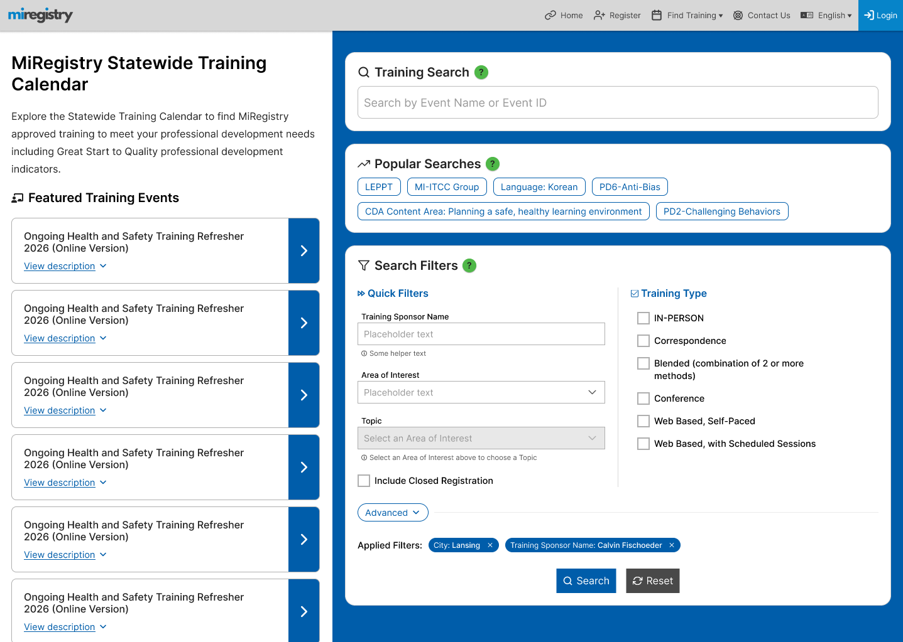
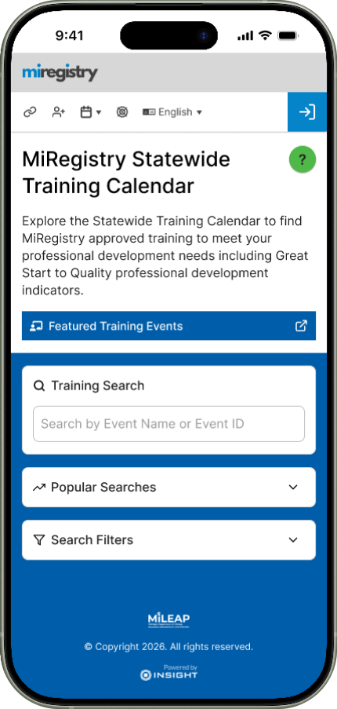

The Training Calendar is a public website that thousands of early childhood professionals in the state of Michigan rely on to find and register for training events that support credentialing and state-level compliance. Over time, incremental enhancements and one-off feature requests caused the interface to become cluttered and difficult to navigate, especially for users who simply needed to locate the right training quickly. Michigan partnered with my team to simplify this experience. I led the redesign from the ground up, using design iterations to clarify ambiguous requirements, align stakeholders, and ultimately create a streamlined search workflow that better supports users' goals.
I joined the project early on to help clarify functional requirements and understand why users struggled with the existing Training Event Calendar. While I couldn't speak directly with end users, I collaborated closely with state-level stakeholders who had deep insight into user complaints, support tickets, and common usage patterns.

Several clear issues emerged through these conversations:
With these pain points in view, I partnered with the Product Owner to translate them into early success criteria. I then sketched initial concepts to build internal alignment around the core functionality and to begin shaping a clearer, more intentional search experience.
Because our stakeholders were highly visual, I structured ideation around a series of increasingly refined prototypes rather than traditional low fidelity wireframes. High fidelity interactive Figma prototypes allowed us to validate data placement, interaction patterns, and workflow logic in context, while also giving stakeholders a way to more easily envision gaps in the designs.
Across three prototype iterations — and three corresponding feedback sessions — we continuously refined both the design and the underlying system requirements. Each round surfaced new insights from usability improvements to edge cases we hadn't initially considered. By the final iteration, we had a design that supported all known and anticipated use cases, improved efficiency across desktop and mobile devices, and rallied stakeholders around a clear, unified vision for the new search experience.
The first prototype translated the initial requirements into a cleaner, more intentional workflow centered on simplicity and contextual separation. To keep early conversations focused on functionality rather than aesthetics, I built this iteration using familiar components from the existing design system. This helped stakeholders quickly understand the proposed workflow while enabling rapid iteration without prematurely investing in new component variants.

Key features of this iteration include:
Together, these patterns create a workflow that feels familiar, predictable, and easy to learn without instructions. The primary goal for this first iteration was to anchor the redesign in established search patterns while resolving the pain points that had accumulated over years of incremental changes.
Stakeholders immediately recognized this iteration as a major improvement. The streamlined workflow made it easier for most users to find the right training quickly, while still supporting more advanced needs.
Two critical gaps emerged through the discussion that followed my presentation:
With this feedback — and a quick internal alignment session — I moved into the next iteration.
The second prototype focused on addressing the gaps identified in the first iteration — specifically, restoring key content to the landing page and improving the visibility of common filters. Balancing simplicity with usability was challenging without direct user testing, so I relied on cognitive walkthroughs to evaluate the design from the perspective of different user types. This helped me surface the most essential filters by default while still keeping less frequent filters accessible under an “Advanced” section.

Adding welcome text and a Featured Training card introduced new layout pressures. I became concerned that the omnisearch input — the primary entry point for most users — was slipping too far down the page/"below the fold" and losing prominence. To preserve its importance, I introduced a subtle colored border and a “Training Search” header, ensuring the search field remained visually dominant even on mobile.
The client appreciated these improvements but raised new questions that shaped the next iteration:
These requests pushed the design toward greater complexity, and I was initially concerned the design would begin to drift away from the original goal of simplifying the experience. However, as I explored solutions, I found an approach that preserved simplicity without sacrificing functionality, setting the stage for the next iteration.
The third — and ultimately final — iteration brought together the remaining requirements into a cohesive, streamlined experience that supports every major user path without adding unnecessary complexity. This round focused on integrating contextual help, surfacing shortcut paths, and modernizing the visual design (while staying consistent with system standards) to signal that this is a fully rebuilt experience. A more polished, contemporary interface is important not just for aesthetics and delight, but for earning trust and establishing credibility, especially with users who had struggled with the legacy workflow.

Key revisions in the final design include:
To elevate the experience from "usable" to truly intuitive, I added a few quality-of-life enhacements to the design:
These changes collectively strengthen the system's intuitiveness, reduce cognitive load, and ensure that the most important actions are both salient and easy to access.
With the introduction of a two-column layout and more complexity in interactive elements, I created dedicated mobile designs to demonstrate that the experience remained consistent, accessible, and intuitive across devices. In line with other patterns in the redesign, the mobile version relies on drawers, overlays, and collapsible sections to preserve clarity without cluttering the limited viewport.

Key adaptations include:
The client responded enthusiastically to these updates, especially after interacting with the mobile prototype. Without sacrificing simplicity or elegance, this final iteration met all emerging requirements and established a scalable, extensible workflow that can support future enhancements.
The buttons below lead to the same desktop and mobile prototypes that ultimately received final approval from the client. They highlight the motion, transitions, and interaction patterns that make the experience both intuitive and expressive.
At the time of this writing, I'm finalizing the artefacts needed for a smooth handoff to engineering. This includes scenario-based interaction flows that clarify how each components behave in different user paths, as well as annotated designs that document styling and structural details for front end implementation. I'll continue partnering with the development team to ensure accessibility, oversee functional integrity, and support the integration of these components into the broader design system.
One limitation of this project was the lack of direct access to end users; most insights came from well-informed but secondary sources. As the redesign moves forward, two research approaches in particular would meaningfully strengthen the solution:
Combined, these studies would deepen the team's understanding of user needs and guarantee the redesigned experience continues to evolve in a data-informed, user-centered way.
This project gave me valuable space to deepen my practice as a designer that values leveraging design to converge on system requirements rooted in user-centered design principles. Managing the end-to-end UX process — from shaping ambiguous requirements to preparing a full design-to-dev handoff — provided me another opportunity to refine how I organize complex work, structure decision making, and guide cross-functional teams toward consensus.
The constraints, while challenging to navigate, pushed me toward growth. Designing for thousands of users without direct access to them required a disciplined, strategic approach to understanding the problem space. Careful scenario planning, structured evaluation methods, and close collaboration with the product owner and client helped move the project from uncertainty to success.
Good design isn't just about pushing pixels around on a screen — it's an invaluable tool to mediate communication, build shared understanding, and transform ideas into reality.